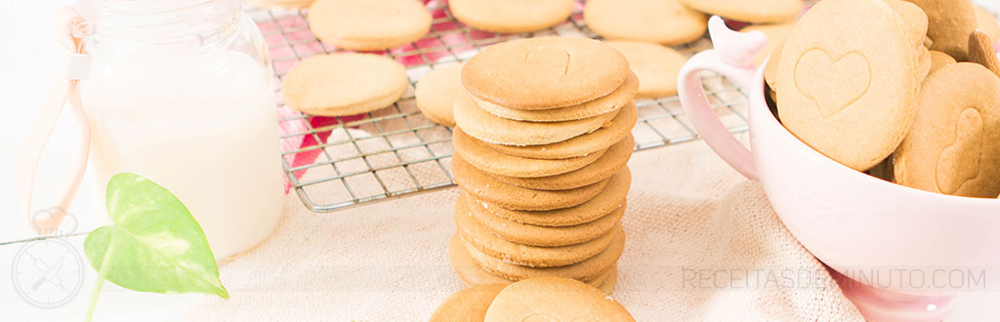

Biscoito Maria Caseiro
Autor: Consuelo
Sabe aquela Bolachinha Maria que vai bem no cafezinho e também é perfeita para fazer aquele pavê delicioso?
Então corre que agora você pode fazer esse Biscoito Maria Caseiro maravilha em casa, caseiro e super crocante perfeito para todas as ocasiões do dia e para deixar suas sobremesas mais que incríveis!!!
PREPARO: 60 MINUTOS
RENDIMENTO: 10 PORÇÕES
Acceso Rápido
- Ingredientes
- Modo de Preparo
- Video da Receita
Ingredientes
- ½ xícara (chá) de Leite
- 1 xícara (chá) de Açúcar
- 1 colher (chá) de Bicarbonato de Sódio
- Sal (a gosto)
- 1 Colher (chá) de Essência de Baunilha
- 450g Farinha de trigo (sem fermento)
- 110g de Manteiga (bem gelada)
Modo de Preparo
- Em uma panela coloque o leite, açúcar, bicarbonato de sódio e sal e cozinhe em fogo
baixo até ficar cremoso e sem nenhum grãozinho de açúcar e deixe esfriar.
- Em uma tigela coloque a farinha de trigo tradicional e sem fermento, a manteiga bem gelada
e com as pontas dos dedos e assim que a manteiga ficar bem misturada com a farinha adicione
a misturinha da panela e misture bem.
- Use as mãos para trabalhar a massa, até ter uma massa que seja bem modelável e não grude nas mãos.
- Embrulhe em plástico filme e leve para gelar por cerca de 30 minutos,
- Abra a massa entre 2 papeis manteiga e abra com ajuda de um rolo de forma que fique bem fininho,
corte com um cortador de biscoito e leve a massa para o freezer por cerca de 10 minutos para
ficar mais firme e não perder o formato!
- Coloque na forma untada enfarinhada e leve para assar em forno preaquecido a 180°C
por cerca de 20 minutos ou até dourar bem!
VOLTAR PARA O TOPO